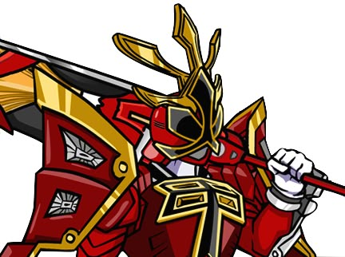
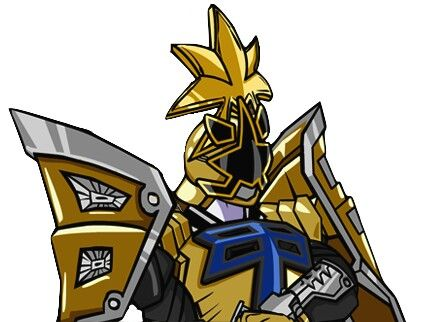
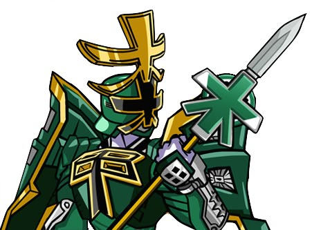
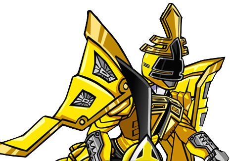
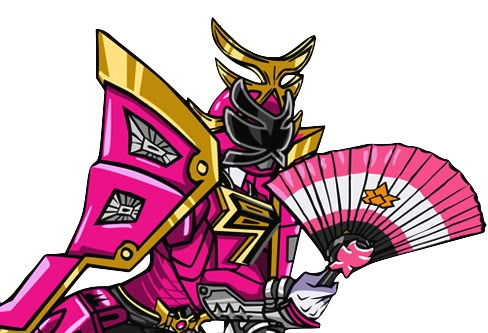
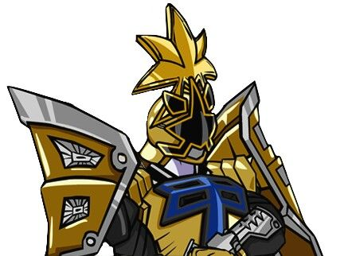
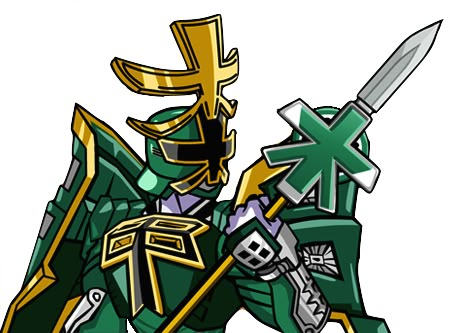
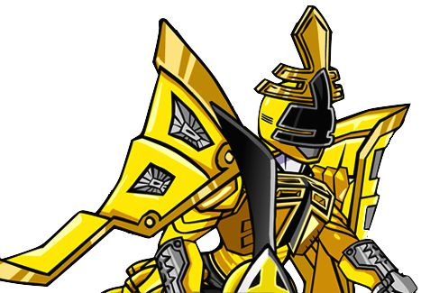
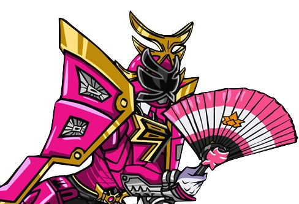

The Power Rangers samurai is one series of the big power rangers franchise. They also have a sequel to this seires called power rangers super samurai. (Very Original)
This form is considered to be the most powerful form of the sumarai power rangers they even look cool.
 






